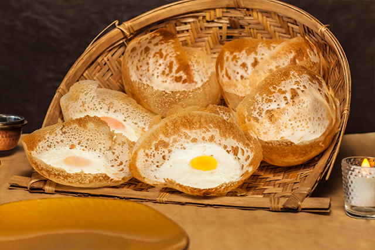
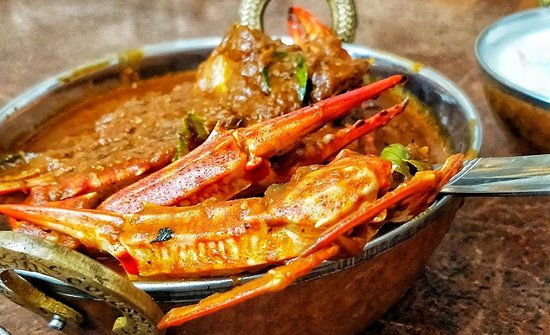
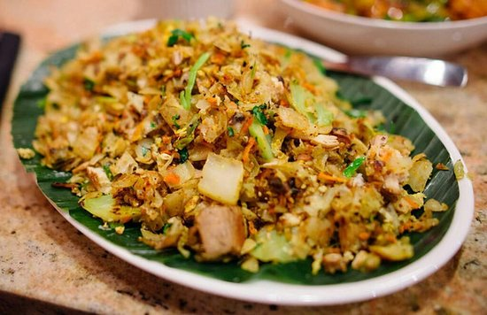
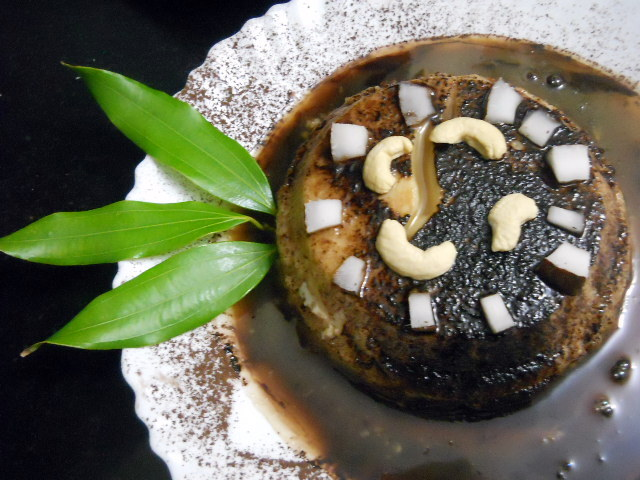

Individual Recipes
Hoppers Recipe
Hoppers can refer to various things, including insects like grasshoppers, containers for bulk materials or paintball ammunition,
and mechanisms in computing or vending machines for data or coins.
The specific context will determine the type of hopper being referred to.

Ingredients
- 2 cups rice flour
- 1/2 cup coconut milk
- 1/2 teaspoon active dry yeast
- 1 teaspoon sugar
- 1/2 teaspoon salt
- Water (as needed)
- Coconut oil (for greasing the hopper pan)
Step 1 :Preparing the Batter
- 1. In a bowl, mix the rice flour, active dry yeast, sugar, and salt.
- 2. Gradually add coconut milk while stirring to avoid lumps.
- 3. Add water gradually to form a smooth, pancake-like batter. The consistency should be similar to dosa batter.
- 4. Let it rest for 2-3 hours to allow the yeast to ferment.
Step 2 :Cooking the Hoppers
- 1. Heat a hopper pan or appam pan over medium heat.
- 2. Lightly grease the pan with coconut oil.
- 3. Pour a ladle of batter into the center of the pan, and quickly swirl the pan to spread the batter thinly around the edges while leaving a slightly thicker center.
- 4. Cover the pan with a lid and cook for 2-3 minutes or until the edges turn crispy and golden brown, and the center is cooked but still soft.
Step 3 :Serving
- 1. Carefully remove the hopper from the pan using a spatula.
- 2. Repeat the process with the remaining batter.
Enjoy
- 1. Serve the hoppers warm with your favorite accompaniments.
- 2. They pair well with coconut sambal, curry, or a simple coconut chutney.
Additional Notes
Hoppers are a traditional Sri Lankan food that is made with fermented rice flour batter.
They are typically served for breakfast or dinner, and they can be enjoyed plain or with a variety of toppings.
Hoppers are a good source of fiber and protein, and they are also gluten-free.
Sri Lankan Crab Curry Recipe
Sri Lankan Crab Curry is a culinary masterpiece that captures the essence of the island's vibrant flavors.
Succulent crab pieces are immersed in a rich, aromatic curry, blending a symphony of spices such as mustard seeds,
fenugreek, cumin, and coriander. Infused with the fragrance of curry leaves and the heat of green chilies,
the dish unfolds its complexity with layers of ginger-garlic paste and a medley of ground spices. The velvety coconut milk adds a creamy touch, harmonizing the bold spices with a hint of sweetness.
Served alongside steaming rice or traditional Sri Lankan accompaniments, this crab curry is a celebration of the island's culinary diversity, offering a taste of the ocean with a fiery and exotic twist.

Ingredients
- 2 lbs (about 1 kg) crab, cleaned and cracked
- 1 large onion, finely chopped
- 2 tomatoes, chopped
- 1/4 cup vegetable oil
- 2 sprigs curry leaves
- 2-3 green chilies, sliced
- 1 tablespoon ginger-garlic paste
- 1 teaspoon fenugreek seeds
- 1 teaspoon mustard seeds
- 1 teaspoon cumin powder
- 1 teaspoon coriander powder
- 1/2 teaspoon turmeric powder
- 1 tablespoon red chili powder (adjust to taste)
- 1 cup thick coconut milk
- 1 cup thin coconut milk
- Salt to taste
- Fresh coriander leaves for garnish
Step 1 :Clean the Crab:
- Clean and crack the crab. Remove the outer shell and cut the body into halves or quarters.
Step 2 :Prepare Spice Mix
- In a small bowl, mix cumin powder, coriander powder, turmeric powder, and red chili powder with a little water to form a paste.
Step 3 :Cooking
- 1. Heat vegetable oil in a large pot over medium heat. Add mustard seeds and fenugreek seeds. Once they splutter, add chopped onions, curry leaves, and green chilies. Sauté until the onions are golden brown.
- 2. Add ginger-garlic paste and sauté for a minute until the raw smell disappears.
- 3. Add the spice paste and cook for a couple of minutes until the oil starts to separate.
- 4. Add chopped tomatoes and cook until they are soft and the oil continues to separate from the spice mixture.
Step 4 :Add Crab
- Add the cleaned crab pieces to the pot and mix well with the spice mixture.
Step 5 :Coconut Milk
- 1. Pour in the thin coconut milk, bring it to a simmer, and let the crab cook until it turns opaque.
- 2. Once the crab is cooked, add the thick coconut milk. Adjust the salt according to your taste. Simmer for another 5-7 minutes.
Step 6 :Finish
- Garnish with fresh coriander leaves.
Serve
- Serve the Sri Lankan Crab Curry hot with steamed rice or traditional Sri Lankan accompaniments like hoppers or string hoppers.
Kottu Recipe
Kottu Roti is a popular and flavorful Sri Lankan street food that has become a beloved dish worldwide. The name "Kottu" literally translates to "chopped," and it aptly describes the preparation method of this dish.
Kottu Roti is made by chopping flatbread (roti) into small pieces and stir-frying them with an assortment of vegetables, meat (such as chicken, beef, or mutton), eggs, and an aromatic blend of spices.

Ingredients
- 4 cups of chopped roti (use leftover or freshly made roti)
- 1 cup cooked chicken, shredded
- 1 cup mixed vegetables (carrots, cabbage, leeks), finely chopped
- 1 large onion, finely chopped
- 2-3 green chilies, finely chopped
- 2 cloves of garlic, minced
- 1-inch piece of ginger, grated
- 1 sprig curry leaves
- 1 teaspoon mustard seeds
- 1 teaspoon cumin seeds
- 1 teaspoon turmeric powder
- 1 tablespoon curry powder
- 2 tablespoons soy sauce
- 2 tablespoons vegetable oil
- Salt and pepper to taste
- Fresh coriander leaves for garnish (optional)
- Lime wedges for serving
Step 1 :Prepare Roti
- Chop the roti into small, bite-sized pieces. You can use leftover roti or make fresh roti for this recipe.
Step 2 :Cook Vegetables
- 1. In a large pan or wok, heat vegetable oil over medium-high heat.
- 2. Add mustard seeds, cumin seeds, and curry leaves. Allow them to splutter.
- 3. Add chopped onions, green chilies, minced garlic, and grated ginger. Sauté until the onions are translucent.
Step 3 :Add Vegetables and Chicken
- Add the finely chopped mixed vegetables and shredded cooked chicken to the pan. Stir-fry for a few minutes until the vegetables are tender.
Step 4 :Spice it Up
- Add turmeric powder, curry powder, soy sauce, salt, and pepper. Mix well to coat the vegetables and chicken with the spices.
Step 5 :Incorporate Chopped Roti
- Add the chopped roti to the pan. Using two spatulas, chop and mix everything together. Continue stirring and chopping until the roti is well combined with the other ingredients and heated through.
Step 6 :Finish and Serve
- Taste and adjust seasoning if needed.
- Garnish with fresh coriander leaves if desired.
- Serve hot with lime wedges on the side.
Enjoy
- Enjoy your homemade Chicken Kottu Roti, a delicious and satisfying Sri Lankan street food classic!
Watalappam Recipe
Watalappam is a treasured dessert that epitomizes the rich culinary heritage of Sri Lanka. This indulgent sweet treat is a harmonious blend of aromatic spices,
creamy coconut milk, and the distinctive sweetness of jaggery. Prepared by steaming a luscious mixture of jaggery-infused coconut milk, eggs, and an array of flavorful ingredients such as cashew nuts and raisins,
Watalappam exudes a velvety texture and a captivating depth of taste.
Its dark, caramel hue hints at the richness within, while the scent of cardamom adds a subtle, aromatic note.
Often served during festive occasions and special celebrations, Watalappam is not just a dessert;
it's a culinary masterpiece that reflects the cultural fusion of Sri Lankan, Dutch, and Malay influences. Whether presented in elegant molds or sliced into squares,
Watalappam is a symbol of indulgence and a delectable conclusion to any Sri Lankan feast

Ingredients
- 1 cup jaggery (grated or chopped)
- 1 cup coconut milk
- 6 large eggs
- 1/4 cup cashew nuts (chopped)
- 1/4 cup raisins
- 1/4 cup grated coconut (optional, for garnish)
- 1 teaspoon ground cardamom
- 1 teaspoon vanilla extract
- A pinch of salt
Step 1 :Prepare Jaggery Syrup
- In a saucepan, melt the jaggery on low heat with a couple of tablespoons of water. Strain to remove any impurities and set aside to cool.
Step 2 :Beat Eggs
- In a mixing bowl, beat the eggs well until they are smooth and slightly frothy.
Step 3 :Combine Ingredients
- Add the jaggery syrup to the beaten eggs and mix thoroughly.
- Gradually add the coconut milk while stirring continuously to avoid curdling.
- Add chopped cashew nuts, raisins, ground cardamom, vanilla extract, and a pinch of salt. Mix well.
Step 4 :Strain the Mixture
- Strain the mixture through a fine sieve or cheesecloth to achieve a smooth consistency. This step helps remove any remaining lumps and ensures a silky texture.
Step 5 :Prepare for Steaming
- 1. Grease a round or square baking dish or individual molds with a bit of oil or butter.
- 2. Pour the strained mixture into the prepared dish.
Step 6 :Steam the Watalappam
- 1. Cover the dish with aluminum foil or a lid.
- 2. Steam the watalappam on low to medium heat for about 45 minutes to 1 hour, or until it sets. You can use a steamer or a large pot with a steaming rack.
Step 7 :Check for Doneness
- To check if it's done, insert a toothpick into the center. If it comes out clean, the watalappam is ready.
Step 8 :Cool and Garnish
- 1. Allow the watalappam to cool to room temperature.
- 2. Optionally, garnish with grated coconut on top.
Step 9 :Finish and Serve
- Refrigerate the watalappam for a few hours or overnight to enhance the flavors.
- Cut into squares or scoop into individual servings. Enjoy the rich and flavorful Watalappam!
Enjoy
- This Sri Lankan dessert, often enjoyed during festive occasions, brings together the sweet richness of jaggery, the creaminess of coconut milk, and the warmth of cardamom in a delightful combination.